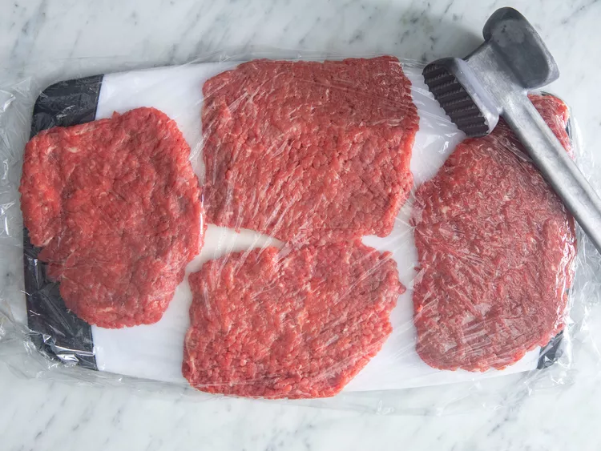

Home
The Best Chicken Fried Steak

This chicken fried steak recipe is one I received from a co-worker about 5 years.
A Southern favorite, these crispy, breaded, tenderized cube steaks drenched in creamy gravy can be served for breakfast or dinner.
It's by far the best chicken fried steak I've ever had.
I've made this numerous times for my picky son and my Southern-raised better half, as well as for other family and friends and each time, I get nothing but rave reviews.
Ingredients
- 4 (½ pound) beef cube steaks4 (½ pound) beef cube steaks
- 2 ¼ cups all-purpose flour, divided
- 2 ¼ cups all-purpose flour, divided
- 1 teaspoon baking soda
- teaspoon black pepper
- ¾ teaspoon salt
- 1 ½ cups buttermilk
- 1 tablespoon hot pepper sauce (e.g. Tabasco™)
- 1 large egg
- 2 cloves garlic, minced
- 3 cups vegetable shortening for frying
- 4 cups milk
- kosher salt and ground black pepper to taste
Directions
Step 1 Place steaks between 2 layers of plastic and pound to a thickness of 1/4 inch

Step 2 Place 2 cups flour in a shallow bowl.
Step 3 Stir together baking powder, baking soda 1 teaspoon pepper, and 3/4 teaspoon salt in second shallow bowl. Add buttermilk, Tabasco sauce, egg, and garlic; stir to combine.

 Step 4
Step 4 Heat shortening in a deep cast-iron skillet to 325 degrees F (165 degrees C). Place a wire rack over a sheet of parchment paper.